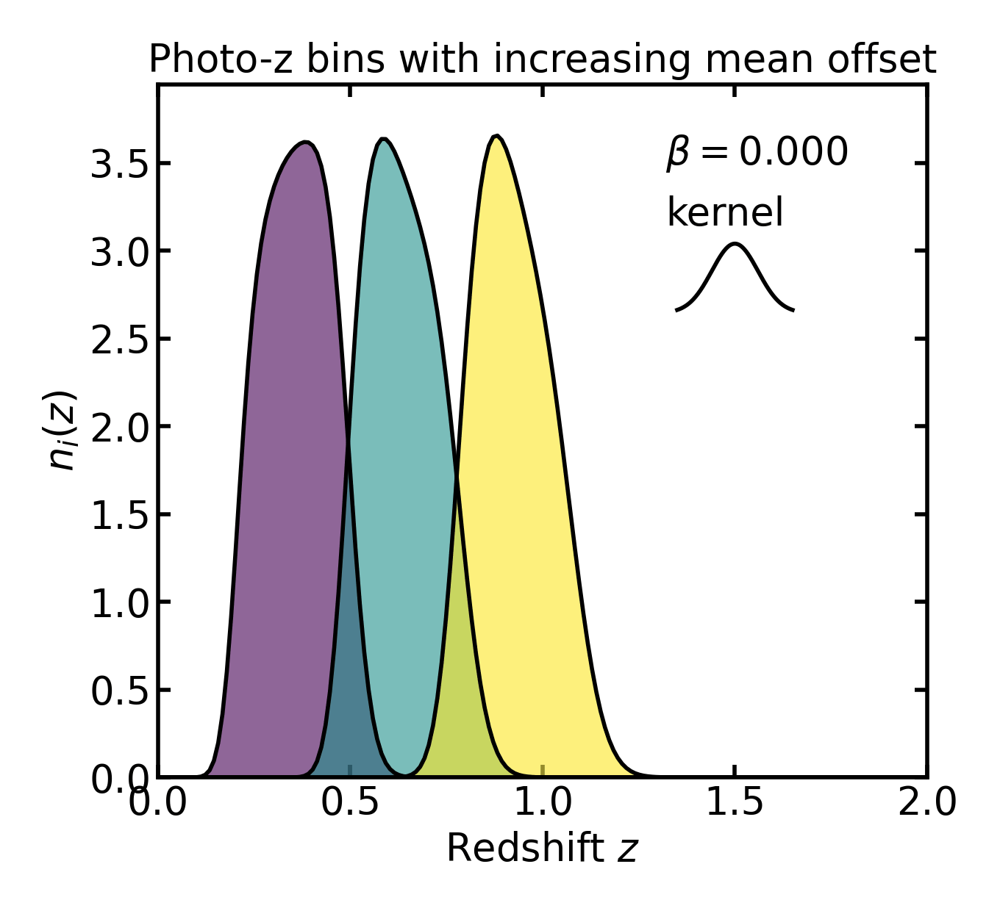
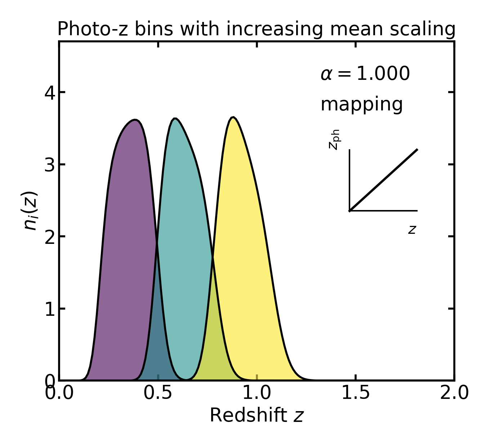
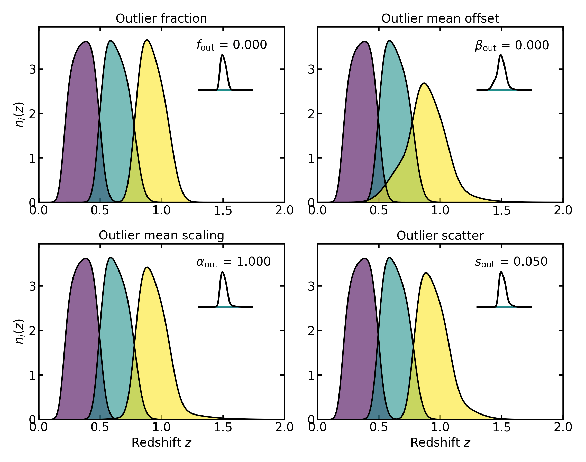

Photometric-redshift uncertainties#
Photometric-redshift uncertainties#
In photometric-redshift tomography, tomographic bins are defined in observed redshift \(z_{\mathrm{ph}}\), but the returned bin curves are evaluated on the true redshift grid \(z\).
For an observed-redshift bin with edges \([z_{\mathrm{ph,min},i}, z_{\mathrm{ph,max},i}]\), the selected true-redshift distribution is
where
\(n_i(z)\) is the returned tomographic bin on the true redshift grid,
\(n(z)\) is the parent redshift distribution,
\(P(i \mid z)\) is the probability that an object at true redshift \(z\) is assigned to observed bin \(i\),
\(z_{\mathrm{ph,min},i}\) and \(z_{\mathrm{ph,max},i}\) are the lower and upper observed-redshift edges of bin \(i\).
The assignment probabilities satisfy
which ensures that every galaxy at true redshift \(z\) is assigned to the set of observed bins with total probability unity.
This means that photo-z tomography does not apply a hard cut in true redshift. Instead, each true redshift value contributes to a bin according to the photo-z assignment model.
Core Gaussian assignment#
The core photo-z model assumes that the observed redshift \(z_{\mathrm{ph}}\) at fixed true redshift \(z\) follows a Gaussian distribution:
where
\(z_{\mathrm{ph}}\) is the observed or photometric redshift,
\(z\) is the true redshift,
\(\mu(z)\) is the mean observed-redshift relation at fixed true redshift,
\(\sigma(z)\) is the scatter of the observed-redshift relation,
\(\mathcal{N}(\mu,\sigma)\) denotes a Gaussian distribution with mean \(\mu\) and standard deviation \(\sigma\).
In Binny, the mean relation is defined as a simple linear function of true redshift:
where
\(\alpha\) is the multiplicative mean-scaling parameter,
\(\beta\) is the additive mean-offset parameter.
In the API, these correspond to:
\(\alpha\) :
mean_scale\(\beta\) :
mean_offset
The scatter model is
where
\(\sigma(z)\) is the Gaussian standard deviation in observed redshift,
\(s\) is the scatter amplitude.
In the API:
\(s\) :
scatter_scale
The corresponding conditional density is
where
\(p(z_{\mathrm{ph}} \mid z)\) is the conditional probability density of observed redshift at fixed true redshift.
The bin-assignment probability is obtained by integrating this density between the observed-redshift edges of bin \(i\):
where
\(P(i \mid z)\) is the probability of assigning a galaxy at true redshift \(z\) to observed bin \(i\),
\(\mathrm{d}z_{\mathrm{ph}}\) is the integration measure in observed redshift.
Because the model is Gaussian, this integral can be written analytically as
where
\(\operatorname{erf}\) is the error function.
In the implementation, this analytic form is used directly, making the assignment smooth, fast, and numerically stable.
No-uncertainty limit#
If the scatter amplitude vanishes, \(s = 0\), the Gaussian model reduces to a deterministic mapping. In that limit,
where
\(z_{\mathrm{ph}}\) is now a deterministic function of true redshift,
\(\alpha\) and \(\beta\) retain the meanings defined above.
The assignment probability becomes
Here
\(1\) indicates certain assignment to bin \(i\),
\(0\) indicates that the object is not assigned to bin \(i\).
This is the sharp-selection limit of the photo-z construction.
Photo-z uncertainty terms#
The implemented photo-z model includes several distinct uncertainty terms.
Scatter#
The scatter model is
where
\(\sigma(z)\) is the Gaussian width in observed redshift,
\(s\) is the scatter amplitude.
API mapping:
\(s\) :
scatter_scale
Larger \(s\) values broaden the assignment probability \(P(i \mid z)\), increase overlap between neighboring tomographic bins, and produce less sharply localized true redshift distributions.

Bias / mean shift#
The mean relation includes an additive offset,
where
\(\beta\) is the additive shift in the mean photo-z relation.
Changing \(\beta\) shifts the mapping between true redshift and observed redshift and therefore shifts the location of the tomographic selection.
{kind=link}

API mapping:
\(\beta\) :
mean_offset
Mean scaling#
The same mean relation also includes a multiplicative scaling,
where
\(\alpha\) is the multiplicative scaling of true redshift in the mean relation.
When \(\alpha \neq 1\), the mapping between true and observed redshift is stretched or compressed with redshift.
{kind=link}

API mapping:
\(\alpha\) :
mean_scale
Outlier mixture#
Binny also supports a second Gaussian component representing catastrophic or outlier-like photo-z failures. Physically, this is meant to capture a minority population of objects whose photometric redshift estimates do not follow the same narrow core relation as the main sample. Instead of having a single Gaussian assignment model, the conditional density is written as a weighted mixture of a core component and an outlier component:
where
\(p_{\mathrm{core}}(z_{\mathrm{ph}} \mid z)\) is the core Gaussian conditional density,
\(p_{\mathrm{out}}(z_{\mathrm{ph}} \mid z)\) is the outlier Gaussian conditional density,
\(f_{\mathrm{out}}\) is the outlier fraction,
\(1-f_{\mathrm{out}}\) is the fraction assigned to the core component.
API mapping:
\(f_{\mathrm{out}}\) :
outlier_frac
\(f_{\mathrm{out}}\) controls what fraction of galaxies follow the outlier redshift model instead of the core relation. If \(f_{\mathrm{out}}=0\), the model reduces to the usual single-Gaussian photo-z relation. As \(f_{\mathrm{out}}\) increases, a larger fraction of objects is assigned according to the outlier component, which can create extended tails or even a visibly separate secondary contribution in the returned tomographic bin.
Equivalently, the assignment probability becomes
where
\(P_{\mathrm{core}}(i \mid z)\) is the core assignment probability,
\(P_{\mathrm{out}}(i \mid z)\) is the outlier assignment probability.
The outlier component has its own mean and scatter model:
where
\(\mu_{\mathrm{out}}(z)\) is the outlier mean relation,
\(\sigma_{\mathrm{out}}(z)\) is the outlier scatter,
\(\alpha_{\mathrm{out}}\) is the outlier mean scaling,
\(\beta_{\mathrm{out}}\) is the outlier mean offset,
\(s_{\mathrm{out}}\) is the outlier scatter amplitude.
These parameters control how the outlier population differs from the core one.
Changing \(\beta_{\mathrm{out}}\) mainly shifts the outlier component, moving the location of the outlier population relative to the core relation. In practice, this often makes the secondary contribution appear displaced in redshift rather than centred on the main peak.
Changing \(\alpha_{\mathrm{out}}\) changes the slope of the outlier mean relation with redshift. Rather than acting like a simple rigid shift, it stretches or compresses the mapping between true and observed redshift for the outlier population. In the returned bins this can move the outlier contribution and also change how that displacement varies across redshift.
Changing \(s_{\mathrm{out}}\) changes the width of the outlier component. Larger values produce a broader, more diffuse outlier population, while smaller values keep it narrower and more localized.
Together, these parameters allow a minority population to follow a broader, shifted, or otherwise distorted redshift-assignment model relative to the core sample. Depending on the parameter values, the outlier contribution may appear as an extended tail, a broad shoulder, or a more clearly separated secondary peak in the returned tomographic bin.
{kind=link}

API mapping:
\(f_{\mathrm{out}}\) :
outlier_frac— fraction of objects assigned to the outlier population\(\alpha_{\mathrm{out}}\) :
outlier_mean_scale— multiplicative scaling of the outlier mean relation\(\beta_{\mathrm{out}}\) :
outlier_mean_offset— additive shift of the outlier mean relation\(s_{\mathrm{out}}\) :
outlier_scatter_scale— scatter amplitude of the outlier Gaussian
Implemented photo-z parameters#
The following photo-z parameters are implemented in Binny:
\(s\) :
scatter_scale— core Gaussian scatter amplitude\(\beta\) :
mean_offset— additive shift in the core mean relation\(\alpha\) :
mean_scale— multiplicative scaling in the core mean relation\(f_{\mathrm{out}}\) :
outlier_frac— outlier-component fraction\(s_{\mathrm{out}}\) :
outlier_scatter_scale— outlier Gaussian scatter amplitude\(\beta_{\mathrm{out}}\) :
outlier_mean_offset— additive shift in the outlier mean relation\(\alpha_{\mathrm{out}}\) :
outlier_mean_scale— multiplicative scaling in the outlier mean relation
Each of these may be provided either as a scalar, applying the same value to all bins, or as a per-bin sequence.
Interpreting the returned photo-z bins#
The returned photo-z tomographic bins are distributions on the true redshift grid. They should therefore be interpreted as
where
\(n_i(z)\) is the returned bin distribution,
\(n(z)\) is the parent distribution,
\(P(i \mid z)\) is the true-to-observed bin-assignment probability.
They are therefore not histograms directly in observed-redshift space.
If normalize_bins=True, each bin is normalized to integrate to unity and
becomes a shape-only redshift probability density. In that case, relative bin
populations are no longer encoded in the returned curves and should instead be
read from the metadata.
Metadata and population fractions#
If metadata is requested, Binny records how much of the original parent distribution falls into each observed bin before any per-bin normalization.
The stored quantities include:
parent_norm: total area under the parent distribution \(n(z)\)bins_norms[i]: area under the raw bin curve for bin \(i\) before normalizationfrac_per_bin[i]: fractional population in bin \(i\), computed asbins_norms[i] / parent_normwhen the parent norm is nonzero
This distinction is important: once individual bins are normalized, they retain their redshift shape but no longer retain their relative abundance.